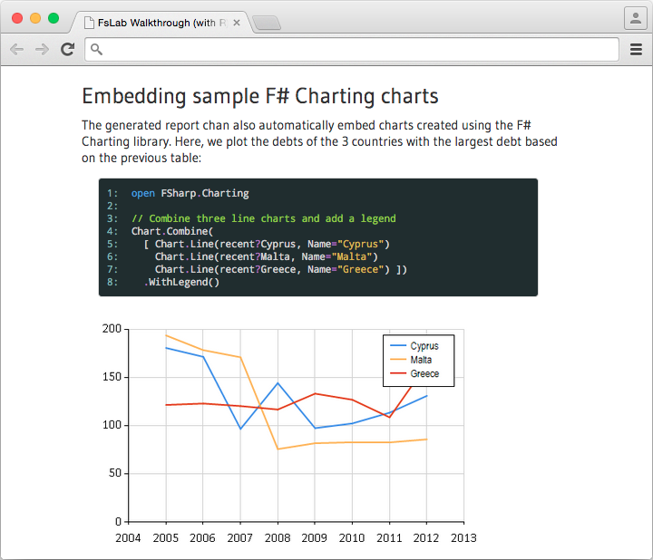

Data science tools Professional, powerful & cross-platform
FsLab is a collection of libraries for data-science. It provides a rapid development environment that lets you write advanced analysis with a few lines of production-quality code.
Access data using type providers, explore it using a efficient data-frame and time-series library and through the R language integration and use rich visualization and reporting.
Increased productivity Easy data access with R integration
Use F# Data type providers to access data from WorldBank, CSV files and any other JSON or XML-based web services and cleanup data easily.
Use the R type provider to call any package from the R language with full editor support and automatic data conversions.

Hassle-free data access Using type providers
You'll never need to look up column names or country codes again! Type providers make data access easy by integrating external data sources directly into your programming environment.
The Deedle library gives you all you need to cleanup your data-frame and time-series data.
Production-ready Create reports and deploy in production
Data analysis using FsLab can be easily deployed into a cross-platform production environment using Mono and .NET. It provides an environment comfortable for scientists, data analysts as well as developers.
When you're done with your analysis, you can produce print-ready reports with embedded charts, code snippets and mathematics using HTML, LaTeX or PDF.